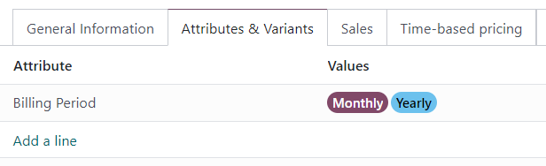

Use las suscripciones en la tienda de su comercio electrónico¶
Los productos de suscripciones se pueden vender en la tienda del comercio electrónico de Odoo como un producto normal.
Sin embargo, la página del producto en el comercio electrónico, solo muestra, de manera predeterminada, el periodo recurrente más corto que aparece en la pestaña Precio basado en el tiempo en el formulario del producto. Por ejemplo, si un producto de suscripción tiene periodos recurrentes configurados en mensuales y anuales, entonces solo aparecerá el precio mensual en la página del comercio electrónico para ese producto de manera predeterminada.
Para agregar más periodos recurrentes en la página del producto del comercio electrónico, cree una variante de producto para cada periodo recurrente.
Cree periodos recurrentes como variantes de producto¶
Para establecer cada periodo recurrente como una variante de producto, vaya a y seleccione un producto. En la pestaña Atributos y Variantes , haga clic Agregar línea.
Cree un Atributo llamado Periodo de facturación (o algo similar) escribiendo el nombre y haciendo clic en Crear. Este nombre de atributo aparece como la opción principal en la página del producto en la tienda del comercio electrónico.
Luego, cree un Valor que corresponda a los periodos recurrentes que están configurados en la pestaña Precio basado en el tiempo del formulario del producto. Escriba el nombre del periodo recurrente, luego haga clic en Crear. Estos nombres de valor aparecen como opciones elegibles en la página del producto de la tienda del comercio elecrónico.
Haha clic en el icono de ☁️ (nube) en la parte superior de la página para guardar manualmente. Después de guardar, aparecerá una columna de Variantes de Producto en la pestaña Precio basado en tiempo. Asigne las variantes del producto a sus periodos recurrentes y precios correspondientes.

Las variantes de producto ahora están disponibles para elegir en la página del producto en el comercio electrónico.